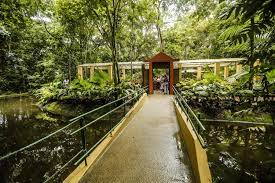
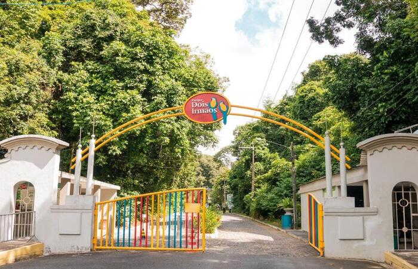
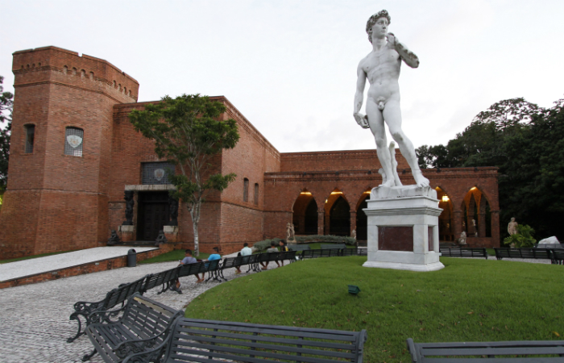

Recife
Pontos Turísticos
Vem Conhecer os melhores
Pontos Turísticos
do Recife
Pontos Turísticos
Marco Zero
Rua do Bom Jesus
Museu Cais do Sertão
  
Jardim Botânico do Recife
Parque Estadual de Dois Irmãos
Instituto Ricardo Brennand
Recife